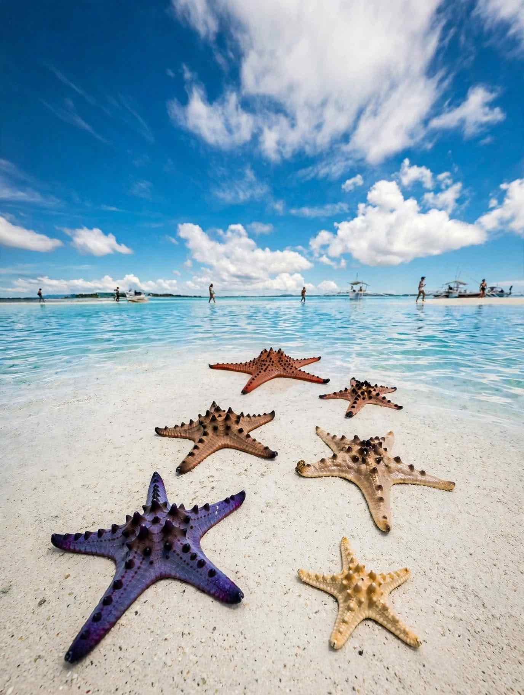

Balicasag and Virgin Island sit a short boat ride off Panglao, and most island-hopping trips from Alona Beach take in both in a single morning. Balicasag is a protected reef known for sea turtles and steep coral walls. Virgin Island is a white sandbar that rises from the shallows at low tide.
Both now come with firmer rules than many older guides describe. Virgin Island reopened on 2 February 2026 after a closure that began in 2024, and it has entrance fees, time limits and a cap on visitor numbers. Balicasag has had daily limits for snorkellers and divers for several years.
This guide covers how a typical trip runs, what each island is like, the rules in force, and what to pack and ask before you book.

How a Typical Trip Runs
Most trips leave early, around sunrise, because the morning is when spinner dolphins are most often seen in the waters off Panglao. The boat then heads to Balicasag for snorkelling, and the last stop is usually Virgin Island, timed for the hours when the sandbar is most exposed.
Balicasag is about 30 to 45 minutes from Alona Beach by outrigger boat, and Virgin Island is closer, at roughly 20 to 30 minutes. There is no public ferry to either island, so you need to join a tour or hire a boat.
Shared tours usually cost around ₱1,500 to ₱2,000 per person, depending on group size and what is included. A private boat for your own group typically runs ₱4,000 to ₱5,000. Ask whether the price covers the snorkelling fee, the Virgin Island entrance fee, gear and lunch, since these are often charged separately.
Balicasag Island: Reef, Turtles and Daily Limits
Balicasag lies roughly 6.5 to 8 km southwest of Alona Beach and measures only about 600 metres across. It has been a marine protected area since 1985, and the waters around it follow a strict no-take, no-touch policy.
Snorkellers stay on the shallow reef on the island's northern side, which is open to all swimmers. The deeper wall, with dive sites such as Black Forest, Rudy's Rock, Cathedral and Turtle Point, is for certified divers only.
Access has been regulated since 2020. Each of the two snorkelling sites is limited to 200 visitors a day, and each of the five dive points to 60. Snorkelling and island-hopping trips must use an accredited tour operator and register online. Divers pay an environmental user fee of about ₱250 a day through their dive shop. Snorkellers also pay a fee on arrival, and a figure of around ₱250 including a guide is common, but confirm the current amount with your operator.
Turtles are the main draw, and they come close to the surface. Give them space, never touch or chase them, and do not stand on the coral, even in shallow patches. Keep your fins away from the reef when you stop to look around.
The dry months from December to April bring the clearest water. From June to September, the southwest monsoon can make the crossing rough, and trips are sometimes cancelled at short notice.
Virgin Island: What Changed When It Reopened
Virgin Island was closed in 2024 after coral was vandalised at a nearby snorkelling spot, and after concern about damage from boat anchors and heavy snorkelling traffic. It reopened on 2 February 2026 under new rules approved by the protected area's management board.
The island is open from 6 am to 6 pm. Entrance costs ₱30 for Filipino visitors and ₱100 for foreigners. The sandbar takes up to 250 people at a time, and each group can stay for up to two hours.
Boats now use a single entry and exit point and mooring buoys instead of dropping anchor on the reef. Visitors register, pay and attend a short environmental briefing before snorkelling or diving, and accredited Department of Tourism guides accompany each group.
Several things are no longer allowed:
Vendors selling food or drinks on the sandbar
Throwing trash into the sea, or burning trash or seaweed
Sunscreen containing oxybenzone or octinoxate
Commercial photo shoots without prior arrangement
A "Pack It In, Pack It Out" rule applies, and boats are inspected for plastics and banned sunscreen before entry. Photo-taking is limited to three minutes per group, so plan your shots before you step off the boat.
Starfish are a common sight in the shallows around the sandbar. Leave them where they are. Lifting them out of the water for a photo stresses and can harm them.
What to Pack
Reef-safe mineral sunscreen is now a requirement rather than a nice extra, so check the label before you leave. A rash guard cuts down on how much sunscreen you need at all.
Bring a reusable water bottle and a small bag for your own trash, since there are no vendors on the sandbar and everything you bring has to leave with you. Cash in small notes helps with fees and gear rental, which usually costs ₱150 to ₱200 for a mask and fins. A dry bag keeps your phone and ID safe on the boat.
Booking Tips
Book with an accredited operator and ask for the full list of inclusions in writing. Early departures give you the best chance of seeing dolphins and calmer water at Balicasag. Check the forecast the day before, especially between June and September.
If you are coming from Cebu for a short stay, our Bohol day trip from Cebu guide covers the crossing and how to fit a full day on the island. With an extra day on Bohol, the Philippine Tarsier Sanctuary in Corella makes a quiet inland contrast to a morning at sea.
Making the Most of the Morning
Leave early, follow the guides, and take only photos from both islands. The new limits mean shorter stops and a little more planning, but they also put a firm cap on how crowded the sandbar can get.